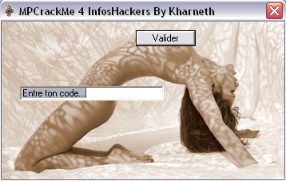

MPCrackMe_cd de Kharneth - Solution par elooo

| Niveau | Outils | Auteur |
|---|---|---|
| Newbie avancé | Ollydbg 1.9d - StudPE - HexWorkShop | elooo |
Familiarisation avec le crackme
Tout d'abord, si on ouvre ce crackme dans StudPE, on constate qu'il est packé avec Aspack 2.12.
L'unpacking manuel d'Aspack 2.12 n'est pas compliqué, cependant je n'expliquerai pas la démarche dans ce tutorial.
Telechargez une version récente du Stripper ou éventuellement Aspackdie (je n'ai pas testée) qui unpackeront le crackme à votre place.
Une fois le crackme décompressé, interessons-nous de plus près à ce crackme.
Si on l'execute, on tombe sur une messagebox similaire à celle-ci :
Bon apparemment on est en face d'un cd-check. Tant qu'on ne l'aura pas contourné on ne saura rien faire d'autres.
On lance le crackme dans le debuggeur et là essayez de poser un bpx quelconque, de lancer le processus et de tracer un peu. BOUM, ollydbg se ferme ! Intuitivement, je dirais que ça sent l'anti-debugger. Voyons voir dans l'éditeur hexa si on y voit quelque chose déjà.
On voit clairement des chaînes de caractères qui correspondent à des noms de debuggers, qu'est-ce que ça peut bien faire ici ? C'est quand même étrange.
Il s'agit en fait d'une sorte de Meltice évolué que Kharneth a incorporé dans son crackme.
Le crackme va chercher en mémoire les chaînes à trouver : les drivers de Softice (SICE pour win 9x et NTICE pour win NT) ainsi qu'ollydbg et windbg. Si elles sont repérées c'est qu'un debugger est actif.
Mais si dans l'éditeur hexa on change les chaînes à trouver, que se passera-t-il ? Le crackme cherchera tout autre chose en mémoire et si ces chaînes correspondent à aucune application active voire existante,
il ne se passera rien et le debugging se déroulera normalement. C'est d'ailleurs comme ça que nous allons nous y prendre :
Revenons à nos moutons, un cd-check nous attend. Maintenant que nous sommes en mesure de debugger, nous allons pouvoir étudier le code correctement.
Etude de la routine
Donc comme on l'a dit plus haut, la première chose qu'il nous faudra virer c'est le cd-check. Les api caractéristiques sont par exemple :
- GetDriveType (si eax=5 alors il s'agit d'un cdrom check)
- GetDriveTypeA
- GetLogicalDrives
- GetLogicalDrivesA
- GetLogicalDriveStrings
- GetLogicalDriveStringsA
Donc sans plus tarder, posons un bpx GetDriveType. Ollydbg nous renvoit cette fenêtre :
Et si l'on fait défiler la liste des api, on voit bien qu'aucun bpx n'a été posé et qu'en plus GetDriveType n'est pas présent dans la liste. Par contre GetDriveTypeA existe.
Donc on recommence mais cette fois avec bpx GetDriveTypeA et là on voit bien que le bpx est posé :
on lance le processus et on arrive ici :
NDLR SeVeN : Sans passer par un bpx en voulant faire vite, on aurait pu aussi faire une recherche dans ollydbg de l'instruction
cmp eax,5
On remarque tout de suite la comparaison de eax à 5, il s'agit bien de notre vérification du cd-rom. Un peu plus bas on voit toute une série de jnz / je :
La solution bourrine serait d'inverser judicieusement ces jump, mais on va
essayer de faire qelque chose de plus propre qui va nous permettre de comprendre
le fonctionnement de GetDriveType.
Si le 5 du cmp eax,5 correspond au lecteur de CDrom, il pourrait suffir
de changer cette valeur par la valeur spécifique au disque dur par
exemple. Ces valeurs correspondent en fait au code de retour de la fonction GetDriveType.
Le code du disque dur est 3.
NDLR SeVeN:
GetDriveType Return Function codes:
Value Meaning
0 Drive Cannot Be determined
1 Root Dir Does not exist
2 DriveRemoveable
3 A Fixed Disk (HardDrive)
4 Remote Drive(Network)
5 Cd-Rom Drive
6 RamDisk
Cependant un autre test juste en dessous (GetVolumeInformationA) rend cette correction insuffisante, le nom du volume, entre autres, étant attendu, il faudrait alors quand même inverser des sauts.
La solution la plus rapide et la moins contraignante consiste à poser un ret tout au début du call (en 004042F4, sur le PUSH EBP),
afin qu'il en sorte aussi vite qu'il y est rentré, et la vilaine message box ne nous embêtera plus. Elle laissera même apparaître une nouvelle
fenêtre comme celle-ci :

C'est donc le moment de s'interesser à la routine de génération du serial. Seulement rentrez un pass bidon plus de 3 fois de suite et regardez la fenêtre qui s'affiche :
On va donc se charger de supprimer cette limitation pour pouvoir continuer. Le plus simple à mon humble avis est de poser un bpx MessageBoxA.
Ce qui nous fait breaker ici :
Si on remonte un peu on voit une comparaison à la valeur 2, avec juste en-dessous un JBE qui se charge de jumper en-dessous
de la message box. En fait ça signifie que si on trouve une valeur inférieure ou égale à 2 en 00403CD1, la message box ne s'affichera pas.
Ne nous cassons pas la tête, un JMP à la place du JBE et l'affaire est réglée :)
NDLR SeVeN :
On voit clairement entre 00403C30 et 00403CCC des appels à des API spécifiques à la manipulation de la base de registre.En effet, le nombre de tentatives est enregistré ici :
HKEY_CURRENT_USER\MPCrackMe 4 InfosHackers By Kharneth
dans une valeur DWORD nommée MPCrackMe 4 InfosHackers By Kharneth, qu'on pourrait réinitialiser.
Et cette fois, pour de bon, on va rellement pouvoir s'occuper du serial !
En faisant défiler les api tout à l'heure, j'ai repéré un GetWindowTextLengthA, qui est
surement loin d'être ininteressant. Il pourrait par exemple récupérer la longueur du pass rentré
pour la comparer à la longueur attendue. Donc essayons : bpx GetWindowTextLengthA. Pof, on arrive ici :
Et c'est effectivement ce que je pensais. Le serial attendu fait donc 14 caractères.
En tracant un peu, plus bas, on peut voir :
Il y a donc trois call importants avant les checksums qui serviront à la vérification du serial.
Le premier du chargement de la string KHAO. On ne sait pas encore à quoi elle va servir, mais nulle doûte qu'elle
aura une fonction :).
Le deuxième call se présente ainsi pour une partie :
Il va vérifier que le 5eme caractère correspond bien à un -, l'autre partie du call qui ne figure pas sur le screenshot s'assure que le serial commence par la fameuse string KHAO de tout à l'heure.
On s'attend donc à avoir un serial qui fait 14 caractères et qui commence par
KHAO-
Puis comme je l'ai commenté plus haut, on voit voit deux appels successifs à un même call suivis de checksum,
qui contiendront la routine de calcul de la valeur qui sera comparée à chacun des checksum.
On y voit :
On sait dès lors que le serial est composé de trois parties séparées par des -, que la 1ere partie est formée de KHAO, que les deux parties suivantes sont également composées de 4 caractères , tous des alphabétiques et en majuscules.
Si on regarde les calculs effectués, sachant que les valeurs obtenues seront comparées aux checksum, si on reverse l'algo on pourra récupérer les bonnes lettres.
Les équations à résoudre sont d'ailleurs :
26325072=((((((car1+car2+car3+car4)^(car1*car2*car3*car4))+car1)*car2)/car3)-car4)pour le 1er checksum (191B050h étant égal à 26325072) et
31304602=((((((car1+car2+car3+car4)^(car1*car2*car3*car4))+car1)*car2)/car3)-car4)pour le 2eme checksum(1DDAB9Ah étant égal à 31304602).
Les équations étant à 4 inconnues, il semble difficile d'en venir à bout autrement qu'en bruteforcant.
Vous trouverez ci-dessous 3 codes-sources dans 3 langages différents qui feront le travail pour vous.
Résolution du crackme
Code-source en C par SeVeN
/*
Name: Bruteforce du MPCrackMe 4 InfosHackers by Kharneth
Author: SeVeN
Date: 29/12/03 01:48
Description: Algo en C
*/
#include <stdio.h>
#include <stdlib.h>
void brute(int checksum)
{
char a, b, c, d;
for (a = 'A'; a <= 'Z'; a++)
for (b = 'A'; b <= 'Z'; b++)
for (c = 'A'; c <= 'Z'; c++)
for (d = 'A'; d <= 'Z'; d++)
if ((((unsigned int)((((a + b + c + d)^(a * b * c * d))+ a)* b)/ c)- d) == checksum)
{
printf("-%c%c%c%c", a, b, c, d);
return ;
}
}
int main()
{
printf("\nBruteforce du \"MPCrackMe 4 InfosHackers by Kharneth\"\npar SeVeN\n\n");
printf("Le serial est KHAO");
brute(0x191B050);
brute(0x1DDAB9A);
printf(".\n\n\n\n");
system("PAUSE");
return (0);
}
Code-source en java par elooo
/*
* AUTEUR: elooo
* DATE: 29/12/03
* TITRE: Bruteforce MPCrackme_cd de Kharneth
* FONCTION: Permet de choper le serial attendu en fonction des checksums
*/
class bruteforce
{
public static void main (String[] args)
{
System.out.println("\n\n**********************************************");
System.out.println("* Bruteforce en JAVA *");
System.out.println("* MPCrackme_cd de Kharneth *");
System.out.println("* Par elooo *");
System.out.println("**********************************************");
System.out.println("**** ****");
System.out.print("**** Le serial attendu est KHAO");
brutozor(26325072);
brutozor(31304602);
System.out.println(" ****");
System.out.println("**** ****");
System.out.println("**********************************************\n");
}
public static void brutozor (int checksum)
{
char car1;
char car2;
char car3;
char car4;
int resultat = 0;
for(car1 = 'A' ; car1 <= 'Z' ; car1++)
for(car2 = 'A' ; car2 <= 'Z' ; car2++)
for(car3 = 'A' ; car3 <= 'Z' ; car3++)
for(car4 = 'A' ; car4 <= 'Z' ; car4++)
{
resultat = (((car1+car2+car3+car4)^(car1*car2*car3*car4))+car1);
long resultatlong = resultat & 0xffffffffL;
if (checksum ==(((resultatlong*car2)/car3)-car4))
System.out.print("-"+car1+car2+car3+car4);
}
}
}
Code-source en asm par elooo
(Désolée d'avance pour les grands codeurs en asm, je ne suis qu'une débutante ^^)
; **************************************************************************
; Catégorie : Bruteforce MPCrackme_cd de Kharneth.
; Type : Bruteforce
; Asm : MASM 8
; Auteur : elooo
; **************************************************************************
[...]
FILTRE1 db "KHAO-%c%c%c%c-%c%c%c%c",0
[...]
Brute PROC
pushad
xor edx, edx
xor eax, eax
xor ecx, ecx
xor esi, esi
debut:
mov CAR1, 65
mov CAR2, 65
mov CAR3, 65
mov CAR4, 65
call routine
jmp checksum
checksum:
cmp edi, 1
je suite2
cmp esi, 26325072
je suite
jmp incrementation
incrementation:
cmp CAR4, 91
je incrementation2
add CAR4, 1
call routine
jmp checksum
incrementation2:
mov CAR4, 65
cmp CAR3, 91
je incrementation3
add CAR3, 1
call routine
jmp checksum
incrementation3:
mov CAR3, 65
cmp CAR2, 91
je incrementation4
add CAR2, 1
call routine
jmp checksum
incrementation4:
mov CAR2, 65
cmp CAR1, 91
je fin
add CAR1, 1
call routine
jmp checksum
suite:
mov edi, 1
movzx edx, byte ptr CAR1
mov byte ptr TEMP1, dl
movzx edx, byte ptr CAR2
mov byte ptr TEMP2, dl
movzx edx, byte ptr CAR3
mov byte ptr TEMP3, dl
movzx edx, byte ptr CAR4
mov byte ptr TEMP4, dl
xor edx, edx
mov CAR1, 65
mov CAR2, 65
mov CAR3, 65
mov CAR4, 65
call routine
suite2:
cmp esi, 31304602
je fin
jmp incrementation
fin:
push dword ptr CAR4
push dword ptr CAR3
push dword ptr CAR2
push dword ptr CAR1
push dword ptr TEMP4
push dword ptr TEMP3
push dword ptr TEMP2
push dword ptr TEMP1
invoke wsprintf, offset SERIAL, offset FILTRE1
add esp, 32
popad
ret
Brute ENDP
routine PROC
movzx edx, byte ptr CAR1
mov eax, edx
movzx ecx, byte ptr CAR2
add eax, ecx
movzx ebx, byte ptr CAR3
add eax, ebx
movzx esi, byte ptr CAR4
add eax, esi
imul edx, ecx
imul edx, ebx
movzx ecx, byte ptr CAR4
imul edx, ecx
mov ecx, eax
xor ecx, edx
movzx eax, byte ptr CAR1
add eax, ecx
movzx edx, byte ptr CAR2
imul edx
movzx edx, byte ptr CAR3
mov ecx, edx
xor edx, edx
div ecx
mov esi, eax
movzx eax, byte ptr CAR4
sub esi, eax
ret
routine ENDP
Après utilisation d'une des bruteforces, on obtient alors comme serial :